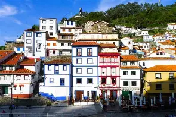

Entre murallas medievales y el Mediterráneo, Peñíscola se alza como un destino de película. Su imponente castillo, encaramado sobre un peñasco, domina las aguas azules y sus estrechas calles empedradas invitan a perderse entre tiendas, bares y miradores con vistas espectaculares. Conocida por su patrimonio histórico y su encanto costero, Peñíscola es la puerta perfecta para adentrarse en el viaje por los pueblos más bonitos de España.
En la costa catalana, rodeado de acantilados y calas de aguas cristalinas, Cadaqués se presenta como un pueblo pintoresco que ha inspirado a artistas de renombre mundial, como Salvador Dalí. Sus casas blancas, calles estrechas y empinadas, y la atmósfera tranquila del Mediterráneo lo convierten en un lugar único donde el tiempo parece detenerse. Cadaqués es un refugio de cultura, paisaje y tradición marinera, un lugar perfecto para sumergirse en la esencia más auténtica de los pueblos de España.
Cudillero es un pintoresco pueblo pesquero que se asoma al Cantábrico, famoso por sus casas de colores que parecen trepar por la ladera del puerto. Sus estrechas callejuelas y miradores ofrecen vistas de postal, mientras que la vida marinera sigue marcando el ritmo del día a día. Con su combinación de tradición, mar y paisaje montañoso, Cudillero captura la esencia de los pueblos costeros de España y deja una impresión imborrable en quienes lo visitan.
